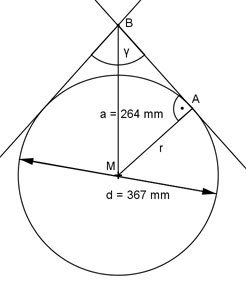

Aufgabe 63 Wie groß ist der Winkel γ zwischen den an den Kreis gelegten Tangenten?

d 367 mm r = --- = ---------- = 183,5 mm 2 2 Im Dreieck MAB (rechter Winkel bei A): r 183,5 cm sin γ/2 = --- = ------------ = 0,6951 a 264 cm --> γ/2 = 44° y = 88°